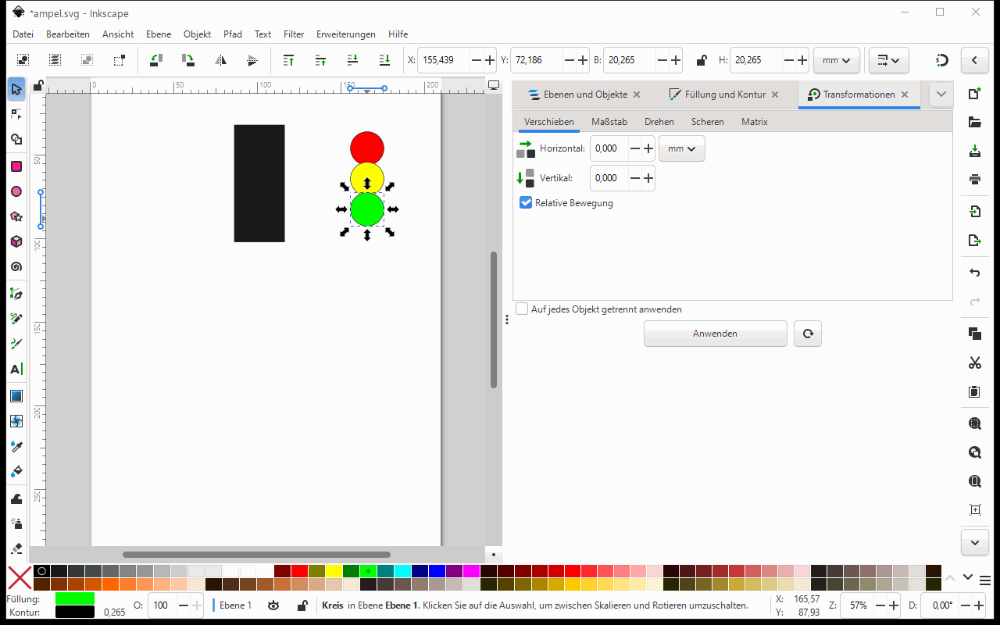
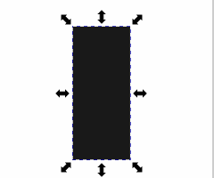
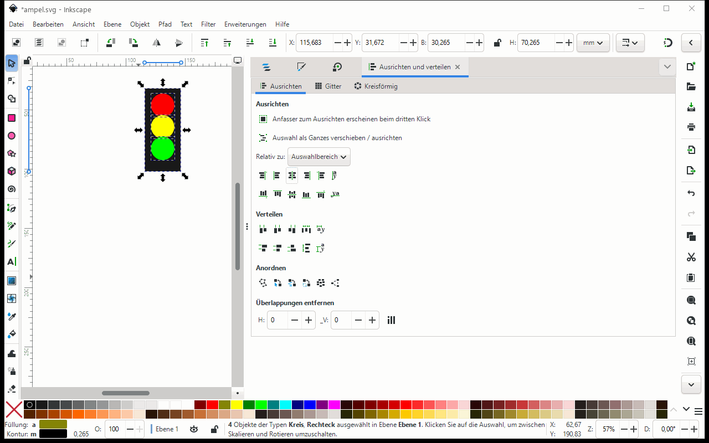
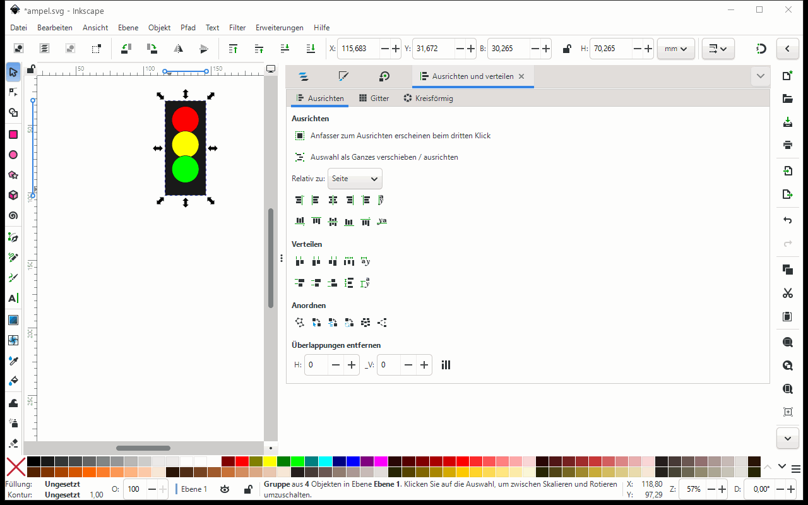
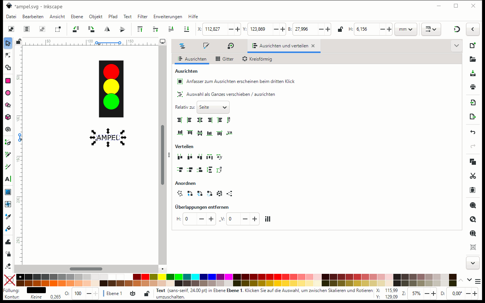

Einmal zeichnen – mehrmals benutzen
Eine Ampel braucht drei gleich große Kreise. Musst du dreimal zeichnen? Nein – du . Der rote Kreis ist schon ausgewählt. Tippe auf Strg + D und schau genau hin.
Dein Ziel: drei Kreise genau untereinander – oben rot, in der Mitte gelb, unten grün.
Du kannst den ausgewählten Kreis auch mit der Maus oder dem Finger ziehen. Ist „Strg gedrückt halten“ an, geht das nur genau senkrecht oder waagrecht.
So geht es in Inkscape

Bild: Inkscape, eigene Aufnahme
Bei dir sieht Inkscape vielleicht dunkel aus. Die Knöpfe sind dieselben.
Wähle das mit dem Auswahlwerkzeug (Pfeil oben links) aus. Drücke Strg + D – das ist → .
Die Kopie liegt genau auf dem Original und ist ausgewählt. Ziehe sie mit gedrückter Maustaste weg. Hältst du dabei Strg gedrückt, bewegt sie sich nur genau senkrecht oder waagrecht.
Kopieren und Einfügen geht auch: Strg + C, dann Strg + V.
MERKE
- Strg + D legt eine Kopie genau auf das Original. Du siehst sie erst, wenn du sie wegziehst.
- Mit gedrückter Strg-Taste ziehst du genau senkrecht oder waagrecht.
- Die Kopie hat zuerst dieselben wie das Original: denselben Radius, dieselbe – und auch dieselbe Position. Ziehst du sie weg, ändert sich nur die Position.
Was liegt oben?
Tim hat seine Ampel aus Versehen kaputt gemacht: Er hat das Gehäuse angeklickt und die Taste Pos1 gedrückt. Jetzt sieht er nur noch ein schwarzes Rechteck.
Keine Sorge – die Kreise sind nicht gelöscht, sie liegen nur darunter. Bring die Ampel in Ordnung: Wähle das richtige Objekt aus und nimm den passenden Knopf.

Bild: Inkscape, eigene Aufnahme
Objekte liegen übereinander
Stell dir Papierschnipsel auf dem Tisch vor: Was du zuletzt hinlegst, liegt oben und verdeckt die anderen. In Inkscape ist es genauso – das zuletzt gezeichnete Objekt liegt oben. Diese Reihenfolge heißt . Du änderst sie im Menü – oder mit denselben vier Knöpfen in der Leiste des Auswahlwerkzeugs:
- Pos1ganz nach oben
- eine Stufe höher
- eine Stufe tiefer
- Endeganz nach unten
MERKE
- Was zuletzt gezeichnet wurde, liegt oben.
- Pos1 = nach ganz oben anheben, Ende = nach ganz unten absenken.
- Verdeckt heißt nicht gelöscht: Das Objekt liegt nur darunter.
Jetzt drei Papierschnipsel, die sich alle überlappen. Stapel sie so wie in der Vorlage. Schaffst du es mit zwei Klicks auf die Knöpfe?
Alles an seinen Platz – und zusammen
Lenas Ampel ist schief: Die Kreise stehen nicht in der Mitte des Gehäuses. Von Hand wird das nie ganz genau. Inkscape kann es – auf den Bruchteil eines Millimeters.
Dein Ziel: Die Kreise stehen genau mittig im Gehäuse, und alle vier Teile sind eine .
So geht es in Inkscape

Bild: Inkscape, eigene Aufnahme
Ausrichten: Wähle mit Strg + A alle Teile aus. Öffne → (Umschalt + Strg + A). Bei „Relativ zu“ steht . Der dritte Knopf der ersten Reihe heißt : Er stellt alle Mitten genau untereinander.

Bild: Inkscape, eigene Aufnahme
Gruppieren: Sind alle Teile ausgewählt, drücke Strg + G ( → ). Die unten meldet „Gruppe aus 4 Objekten“. Jetzt ist die Ampel ein einziges Objekt. Zum Lösen: → (Umschalt + Strg + G).
MERKE
- Erst alles auswählen, dann ausrichten.
- Erst ausrichten, dann gruppieren.
- Eine Gruppe verhält sich wie ein einziges Objekt: Ein Klick wählt alles aus, und beim Verschieben verrutscht nichts.
Die Ampel bekommt einen Namen
Unter die Ampel soll das Wort AMPEL. Dafür hat das Text-Werkzeug – das Symbol „A“ in der Werkzeugleiste links. In welcher Reihenfolge gehst du vor?
Die Leiste des Text-Werkzeugs
Ist das Text-Werkzeug aktiv, zeigt die Leiste oben die des Textes:
Bild: Inkscape, eigene Aufnahme (Ausschnitt)
- sans-serif – Schriftart
- Normal – Stil
- 9 – (hier trägst du 24 ein)
- pt – Einheit der Schriftgröße

Bild: Inkscape, eigene Aufnahme
Ein neuer Text übernimmt oft den Stil des zuletzt benutzten Objekts – zum Beispiel grün mit schwarzer . Dann wählst du ihn mit dem Auswahlwerkzeug aus und klickst in der Palette auf Schwarz.
Die Kontur nimmst du mit Umschalt + Klick auf das rote X (ganz links in der Palette) weg.
MERKE
- Auch ein Text ist ein Objekt. Seine Attribute sind zum Beispiel Schriftart, Schriftgröße und Füllfarbe.
So sah Lenas Text gleich nach dem Tippen aus – und so nach ihren Änderungen:
Text1 vorher
- Schriftart = sans-serif
- Schriftgröße = 9 pt
- Füllfarbe = grün
- Konturfarbe = schwarz
Text1 nachher
- Schriftart = sans-serif
- Schriftgröße = 24 pt
- Füllfarbe = schwarz
- Konturfarbe = keine
Deine Ampel in Inkscape
Ein zweites Bild – diesmal planst du die Schritte mehr selbst. Wichtig ist, dass alles ganz genau ausgerichtet ist.
Hier ist etwas schiefgegangen. Erkläre in eigenen Worten. Die KI gibt dir einen kurzen Hinweis – nicht die Lösung.
Das nimmst du mit
Welches Tastenkürzel macht was? Lege jede Karte zum passenden Kürzel.
Wortspeicher
Alle Fachbegriffe dieser Einheit auf einen Blick. Mehr dazu: und .
Wie geht es weiter?
Kopieren, stapeln, ausrichten, gruppieren, Text setzen – damit hast du alle Werkzeuge für ein eigenes Bild. In der nächsten Einheit planst und zeichnest du ein eigenes Symbol oder Logo.